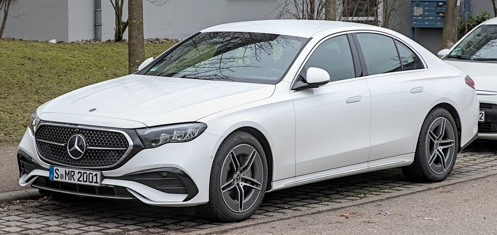

Valuable assistance when looking for a parking space and when manoeuvring into and out of suitable parking spaces: Active Parking Assist is a real help, and not just in the city. The choice is yours – manoeuvre yourself using the 360° camera, which gives you a good all-round view, or simply let the car park itself.

Traffic Sign Assist helps you to comply with speed limits. In addition to speed limits, it can also detect no-overtaking signs and when these restrictions are lifted. It also alerts you to no-entry signs – a handy tool to help you find your way around, especially in unfamiliar places. With the help of the camera in the driver display, your vehicle can recognise the driver, preselect his or her stored user profile and unlock it. The system also simplifies the adjustment of the exterior mirrors, among other things. This increases your operating comfort.